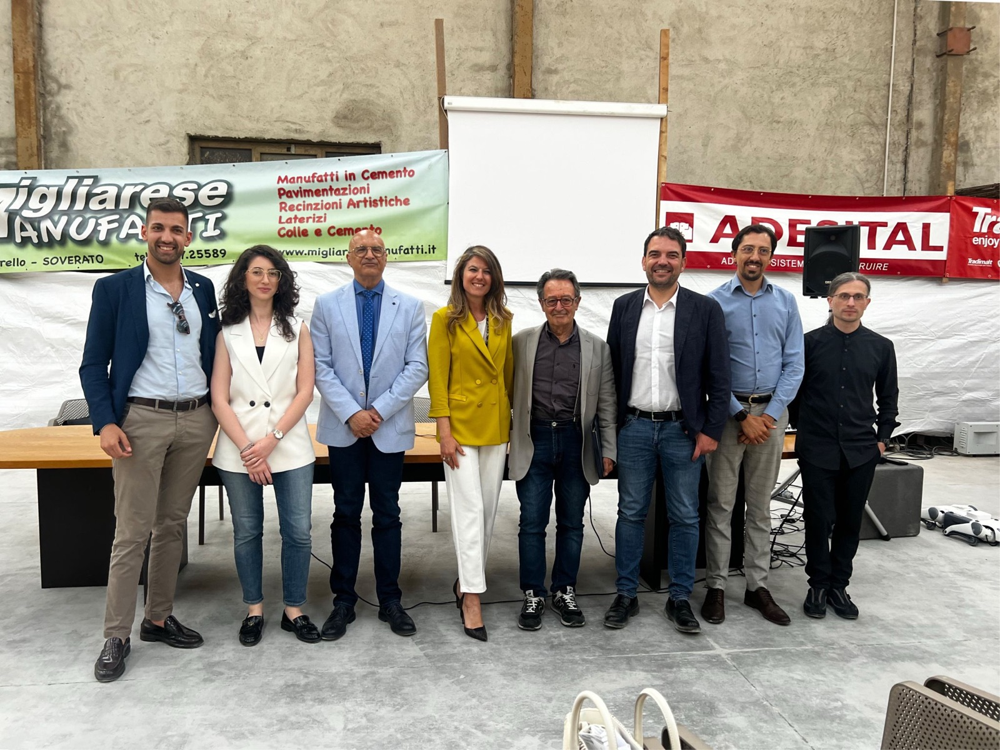

Invited talk
Intelligent Construction-Site Monitoring: Deep Learning and Predictive Analytics for Safety
Calabria, Italy

At the seminar “Intelligenza Artificiale in Edilizia: Innovazione, Efficienza e Sostenibilità”, I spoke about intelligent construction-site monitoring, using deep learning and predictive analytics to improve safety.